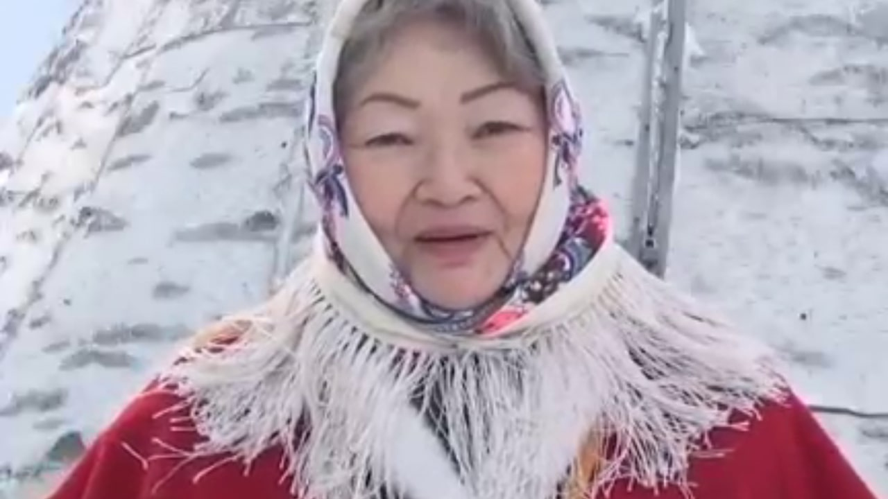
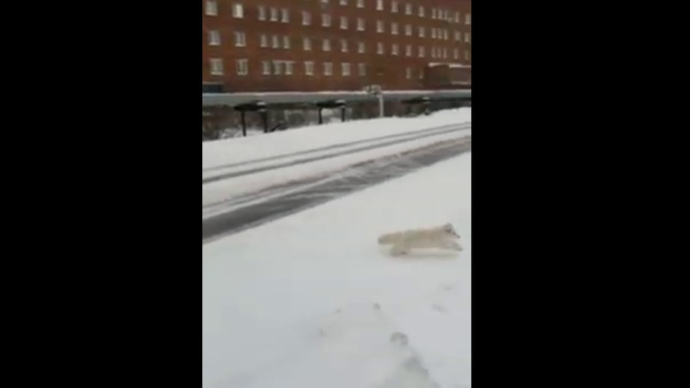

#ДУДИНКА
Другие темыВ этом году впервые в стране проходит Всероссийская хоровая акция «Надежда», посвященная 50-летию песни с одноименным названием Николая Добронравова на музыку Александры Пахмутовой Выступления хоров из разных уголков страны объединят в один общий ролик. В каждом городе песню исполняют в знаковом месте. На Таймыре этим местом стало этно-стойбище «Таймырская Ойкумена». В День народного единства в общем всероссийском хоре эта песня прозвучит и на языках коренных малочисленных народов Таймыра - долганском, нганасанском, ненецком, эвенкийском и энецком. Таймырский хор представили голоса участников Фестиваля «Фольклорная классика Таймыра» из посёлков Усть-Авам, Хатанга, Попигай, Кресты, Носок и города Дудинки.Источник
В Дудинку опять пришли песцы. Видео, на котором песец бегает по проезжей части возле городской ветеринарной станции, выложил один из пользователей сети ВКонтакте. Напомним, самое крупное нашествие песцов на город было два года назад. Эти зверьки целыми семьями жили под домами и контейнерами, питаясь отходами. Больше всего песцов тогда зимовали возле рыбоперерабатывающего цеха.
Михаил Михайлов из Хатанги стал одним из победителей всероссийского фотоконкурса «Мир глазами коренных народов». Его фотография ребенка в национальной долганской одежде, сделанная в поселке Кресты, стала лучшей в специальной номинации «Таймыр – сердце Арктики».
В этом конкурсе, организованном МОО КМНСОЮЗ, жители Таймыра приняли самое активное участие – половина заявок поступила именно из этого района. В основной конкурсной борьбе первое место заняла студентка с Ямала Дарья Вануйто, второе место досталось фотографу Альберту Григорьеву из Якутска, а третье место присудили учительнице из Сындасско Клавдии Чуприной. Фотографии победителей можно увидеть на сайте МОО КМНСОЮЗ.
{kind=link}
В поселке Носок торжественно открыли обновленную смотровую площадку на «Катиной сопке». Строительство площадки – это первый этап проекта «Поселок Носок – наш общий дом», который стал победителем грантового конкурса «Мир Таймыра», организованного компанией «Норильский никель». Местные мастера Иван Ямкин, Александр Ямкин и Иван Яр демонтировали старую площадку и установили новую. При входе на площадку добавили элемент в виде арки. Отремонтировали лестницу – подъем с причала. Заменили доски на тротуаре, ведущем к смотровой площадке. На открытии перед жителями выступили танцевальные коллективы «Ритм» и «Хаерко». Во время праздника резко ухудшилась погода, поэтому конкурсы и игры для детей пришлось отменить – им просто раздали сладкие подарки. Вторую часть проекта «Поселок Носок – наш общий дом» реализуют следующим летом – нанесут на перила смотровой площадки ненецкие орнаменты, установят беседку для отдыха, установят вывеску «Добро пожаловать» и проведут ряд субботников по очистке берега.
{kind=link}
{kind=link}
{kind=link}
{kind=link}
{kind=link}